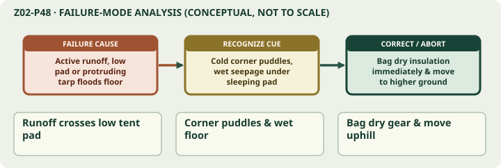

Z02-P48 · Shelter and housing · Adapted historical material
Detect floor flooding, hydrostatic seepage and perimeter runoff intrusion
Distinguish minor condensation drips from active ground-water intrusion and relocate before sleeping insulation soaks.
When it applies · Heavy rain, rapid snowmelt or prolonged wet weather in pitched tents or ground shelters.
Equipment · Headlamp, dry waterproof bags for sleeping gear and pre-checked uphill alternate site.

Actions
- Check floor corners, seam tape and underside feel during steady rain—cold wet pooling under body pressure indicates groundwater seepage, hydrostatic failure or a protruding groundsheet funneling water.[E04, E20, ED]
- Inspect the outside perimeter with a light from a safe stance to see whether new runoff rivulets are flowing toward the tent pad or pooling beside the entrance.[E04, E20]
- Move sleeping bags and dry clothes immediately into waterproof bags off the wet floor; never stay lying in a flooded tent waiting for rain to stop.[E04, E10, E06]
Failure recognition · Sleeping through rising puddle seepage on a low pad until sleeping bags soak completely in 40°F rain, triggering hypothermia.[E04, E06, E10]
Verify · Confirm dry floor corners, zero active runoff channels crossing the pad and dry insulation elevated off damp spots.[E04, E20, ED]
Stop or change course · If runoff crosses the site, floor flooding persists or streams begin rising, pack dry essentials and relocate immediately to higher draining ground or substantial shelter.[E04, T16, E06]
Evidence and editorial notes
- E04 · NWS · Flood Safety: Key Points for Camping and Hiking (agency PDF)
- Section: Before and during camping; know your surroundings · Conditions: Stream valleys and runoff channels subject to flash flooding
Support: Choose higher ground away from water channels. Rain far upstream can drive rapid flooding.
Limitations: Dry streambeds and gentle swales can flood rapidly without local rainfall. · Conflicting evidence: None; aligns with NWS-FLOOD.
Editorial note: Core hydrological exclusion rule for shelter placement. · Specialist reviewer: Emergency management and hydrology
Primary source · checked 2026-11-24 - E06 · CDC · Preventing Hypothermia (current web edition)
- Section: Recognizing and treating hypothermia · Conditions: Cold wet exposure; signs such as confusion, slurred speech, fumbling or drowsiness
Support: Suspected hypothermia warrants prompt help and protection from further cooling. It can occur above freezing if wet or chilled.
Limitations: Early mild shivering can mask rapidly worsening judgment impairment. · Conflicting evidence: None; aligns with ARC and WMS guidance.
Editorial note: Anchors exposure-to-medical escalation thresholds. · Specialist reviewer: Wilderness medicine
Primary source · checked 2026-11-24 - E10 · NWS · What To Do If You're Caught in a Winter Storm (current web edition)
- Section: Outside > Protect yourself from frostbite and hypothermia · Conditions: Outdoor winter storm
Support: Keep clothing dry and avoid overexertion. Wetness accelerates cooling.
Limitations: Cotton retains moisture and accelerates conductive and evaporative heat loss. · Conflicting evidence: None; reinforces moisture-management layering.
Editorial note: Links sweat management to overnight insulation integrity. · Specialist reviewer: Cold-weather shelter and wilderness medicine
Primary source · checked 2026-11-24 - E20 · NPS · Camping: What to Bring (current web edition)
- Section: Camping: What to Bring > Shelter and Sleep System · Conditions: Overnight camping across three-season and cool conditions
Support: Match tent/tarp, groundsheet, sleeping pad, and sleeping bag ratings to expected night lows and precipitation; test pitching and inspect poles, zippers, and stakes before departure.
Limitations: Manufacturer comfort ratings assume dry insulation, ground pad use, and adequate caloric intake. · Conflicting evidence: None; reinforces pre-trip inspection and dry-sleep separation.
Editorial note: Anchors manufactured shelter selection, groundsheet fit, and gear readiness. · Specialist reviewer: Shelter equipment and field education
Primary source · checked 2026-11-24 - T16 · NWS · Flood Safety (current web edition)
- Section: Flood Watches and Warnings; Turn Around Don’t Drown · Conditions: U.S. flood alerts and routes crossing moving or standing floodwater
Support: Use the local flood alert wording and follow directions to move to safer higher ground. Never drive around a barricade or enter a flooded route.
Limitations: Stages, timing and detours depend on event and locality; no observable safe crossing depth. · Conflicting evidence: See A02 claim audit for boundaries.
Editorial note: Clarifies Watch vs Warning decision thresholds in Z01 scenarios. · Specialist reviewer: Emergency management and meteorology
Primary source · checked 2026-11-24
Source lineage · NWS flood safety and B012 P09/P18; new manuscript · Classification · Adapted historical material.